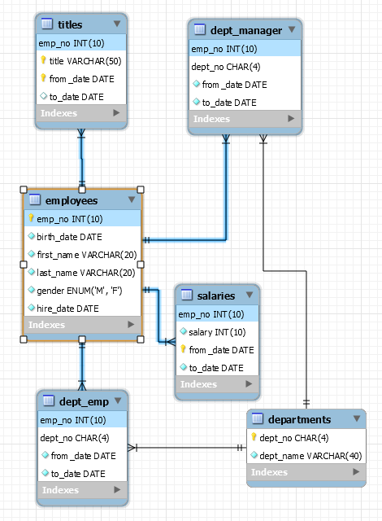

Create database
Create a new database named as employees
-- Create a database
CREATE DATABASE IF NOT EXISTS employees;Show all the databases
SHOW DATABASES[('employees',),
('information_schema',),
('mysql',),
('performance_schema',),
('sakila',),
('sys',),
('world',)]Set the current database as employees
USE employees;Check what is current database
SELECT DATABASE()[('employees',)]Create tables
Create employees table
CREATE TABLE employees (
emp_no INT UNSIGNED NOT NULL AUTO_INCREMENT PRIMARY KEY,
birth_date DATE NOT NULL,
first_name VARCHAR(20) NOT NULL,
last_name VARCHAR(20) NOT NULL,
gender ENUM ('M','F') NOT NULL,
hire_date DATE NOT NULL
);VARCHAR - variable-length alphanumeric string, dynamic memory allocation, slower than CHAR
CHAR - fixed length character string, static memory allocation, faster than VARCHAR
AUTO_INCREMENT - generate unique number automatically when a new record is inserted into a table
PRIMARY KEY
- uniquely identifies each record in a table.
- Primary keys must contain UNIQUE values, and cannot contain NULL values.
- A table can have only one primary key, which may consist of single or multiple fields.
- Must be given on record creation and can not be changed later.
Create departments table
CREATE TABLE departments (
dept_no CHAR(4) NOT NULL,
dept_name VARCHAR(40) NOT NULL,
PRIMARY KEY (dept_no),
UNIQUE KEY (dept_name)
);UNIQUE KEY - all values in column are unique. You can have many UNIQUE constraints per table, but only one PRIMARY KEY constraint per table.
Create dept_manager table
CREATE TABLE dept_manager (
emp_no INT UNSIGNED NOT NULL,
dept_no CHAR(4) NOT NULL,
from_date DATE NOT NULL,
to_date DATE NOT NULL,
FOREIGN KEY (emp_no) REFERENCES employees (emp_no) ON DELETE CASCADE,
FOREIGN KEY (dept_no) REFERENCES departments (dept_no) ON DELETE CASCADE,
PRIMARY KEY (emp_no, dept_no)
);FOREIGN KEY
- a key used to link two tables together.
- is a field (or collection of fields) in one table that refers to the PRIMARY KEY in another table.
- the table containing the foreign key is called the child table, and the table containing the candidate key is called the referenced or parent table.
- the value of foreign key could be NULL
- it doesn’t have to be unique
ON DELETE CASCADE - means if a record in the parent table is deleted, then the corresponding records in the child table will automatically be deleted.
UNSIGNED - only positive number
MEDIUMINT - medium sized integer
Create dept_emp table
CREATE TABLE dept_emp (
emp_no INT UNSIGNED NOT NULL,
dept_no CHAR(4) NOT NULL,
from_date DATE NOT NULL,
to_date DATE NOT NULL,
FOREIGN KEY (emp_no) REFERENCES employees (emp_no) ON DELETE CASCADE,
FOREIGN KEY (dept_no) REFERENCES departments (dept_no) ON DELETE CASCADE,
PRIMARY KEY (emp_no, dept_no)
);Create titles table
CREATE TABLE titles (
emp_no INT UNSIGNED NOT NULL,
title VARCHAR(50) NOT NULL,
from_date DATE NOT NULL,
to_date DATE,
FOREIGN KEY (emp_no) REFERENCES employees (emp_no) ON DELETE CASCADE,
PRIMARY KEY (emp_no,title, from_date)
);Create salaries table
CREATE TABLE salaries (
emp_no INT UNSIGNED NOT NULL,
salary INT NOT NULL,
from_date DATE NOT NULL,
to_date DATE NOT NULL,
FOREIGN KEY (emp_no) REFERENCES employees (emp_no) ON DELETE CASCADE,
PRIMARY KEY (emp_no, from_date)
);Show all the tables in database
SHOW TABLES;[('employees',), ('departments',), ('dept_manager',), ('dept_emp',), ('titles',), ('salaries',)]Entity Relationship (ER) diagram
Looking at the ER diagram we can understand the complete picture. How different tables are connected with each other and what kind of data each table contains.
